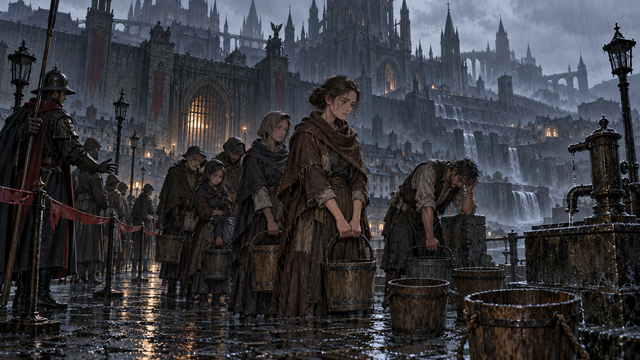
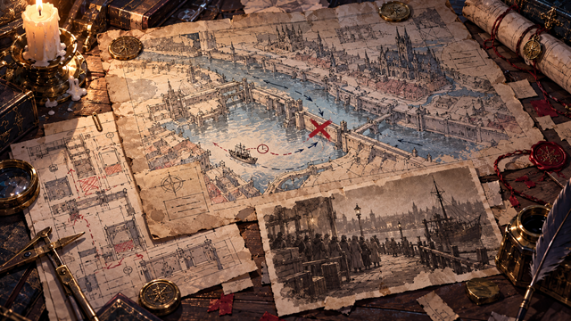
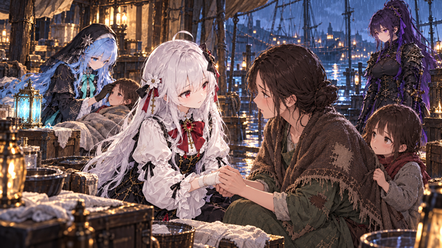
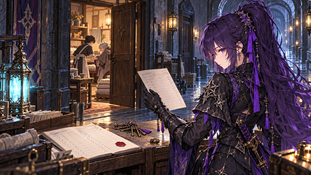
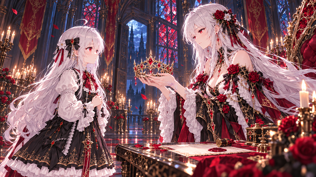
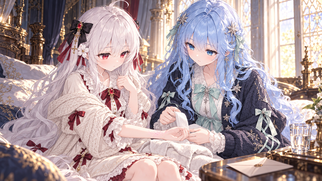
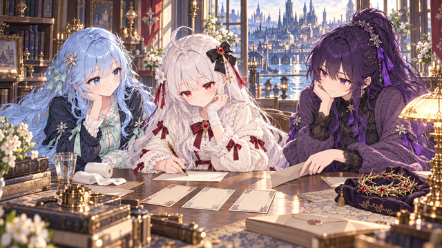

cg-n01 · 街灯与等水的人1672×941 → 3840×2160
cg-n02 · 十年前失败的撤运1672×941 → 3840×2160
cg-n03 · 请求她留下的母亲1672×941 → 3840×2160
cg-n04 · 遗漏的住人区1672×941 → 3840×2160
cg-a01 · 姐姐交出王冠1672×941 → 3840×2160
cg-a02 · 第一道晶纹1672×941 → 3840×2160
cg-a03 · 灯下三人和回程票1672×941 → 3840×2160